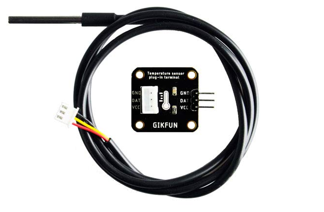
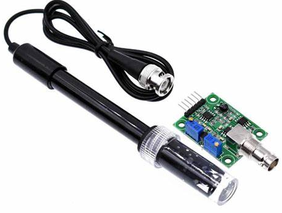
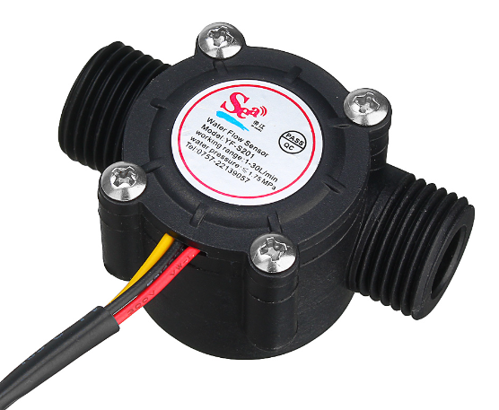
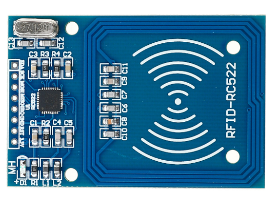
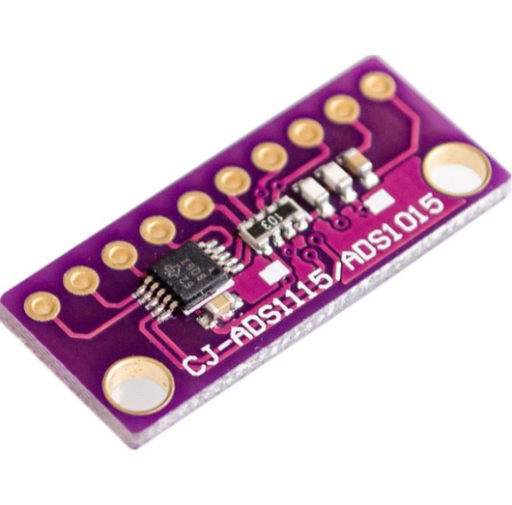
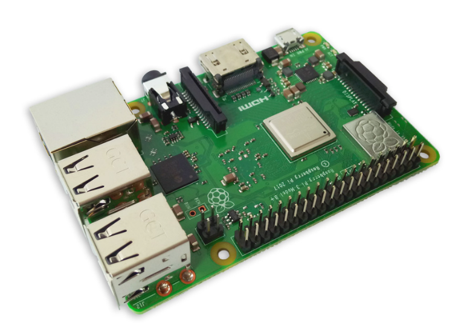

Utilizaremos el sensor DS18B20 para medir la temperatura de la leche que se esta ordeñando, con el objetivo de prevenir la contaminacion del tanque de almacenamiento total de la leche con leche que puede estar en mal estado. El rango normal de temperatura para la leche recién ordeñada es típicamente de 36°C a 39°C (98.6°F a 102.2°F), que es la temperatura corporal de una vaca.
Utilizaremos el sensor de pH PH4502 para medir el pH de la leche que se esta ordeñando, con el objetivo de prevenir la contaminación del tanque de almacenamiento total de la leche con leche que puede estar en mal estado. El rango de pH aceptable en la leche cruda generalmente cae dentro del rango de 6.4 a 6.8. Utiliza un electrodo sensible al pH para detectar los cambios en la concentración de iones hidronio (H+) en la solución, este devuelve un valor de voltaje proporcional al valor de pH medido
Utilizaremos el sensor de flujo YF-S201 para medir el flujo de la linea del ordeño mecanico, con el objetivo de obtener el volumen total que ha pasado sobre la linea, es decir, la cantidad de leche que fue ordeñada Este sensor utiliza un principio de efecto Hall para detectar el paso de fluido a través de una hélice en su interior
Utilizaremos el sensor RFID RC522 para hacer el proceso de identificacion de la vaca a la cual se va a ordeñar, con el objetivo de almacenar las variables medidas en su historial individual. El RC522 utiliza el protocolo de comunicación SPI (Interfaz de Periféricos Seriales) para interactuar con microcontroladores y sistemas digitales. En la chapeta de cada vaca se ubicara un elemento identificador RFID con credenciales unicas.
El ADS1115 es un convertidor analógico a digital (ADC) de 16 bits de alta precisión desarrollado por Texas Instruments. Diseñado para aplicaciones que requieren una conversión precisa y de bajo ruido, este dispositivo puede convertir señales analógicas en valores digitales con una resolución de hasta 16 bits, lo que proporciona una precisión excepcional en la medición de pequeñas variaciones de señal.
Utilizamos la Raspberry 3B+ para desarrollar el proyecto por su alta velocidad de procesamiento, conectividad a internet, multiples puertos usb, hdmi, ethernet, manejo de multiples protocolos de comunicacion, ademas de la amplia cantidad de documentacion disponible para la programacion de la raspberry con python.
